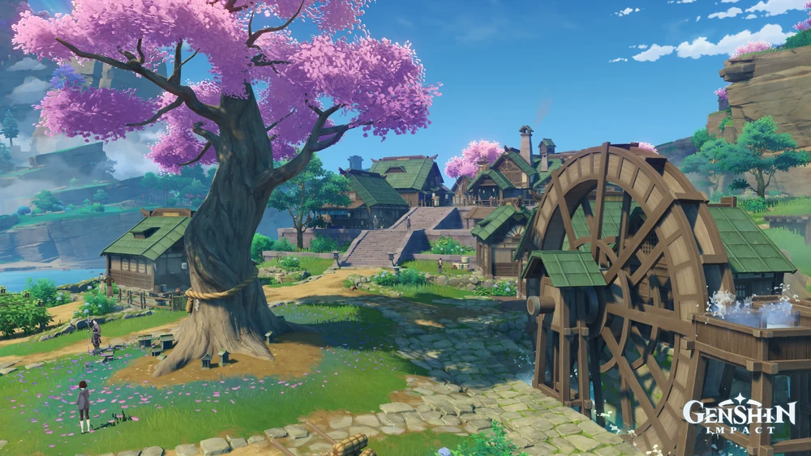
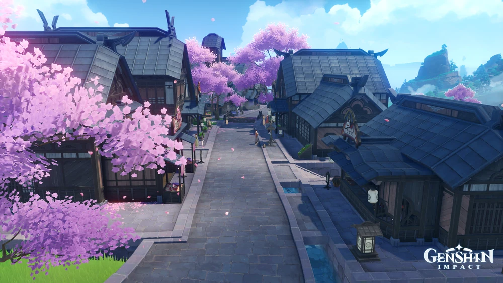
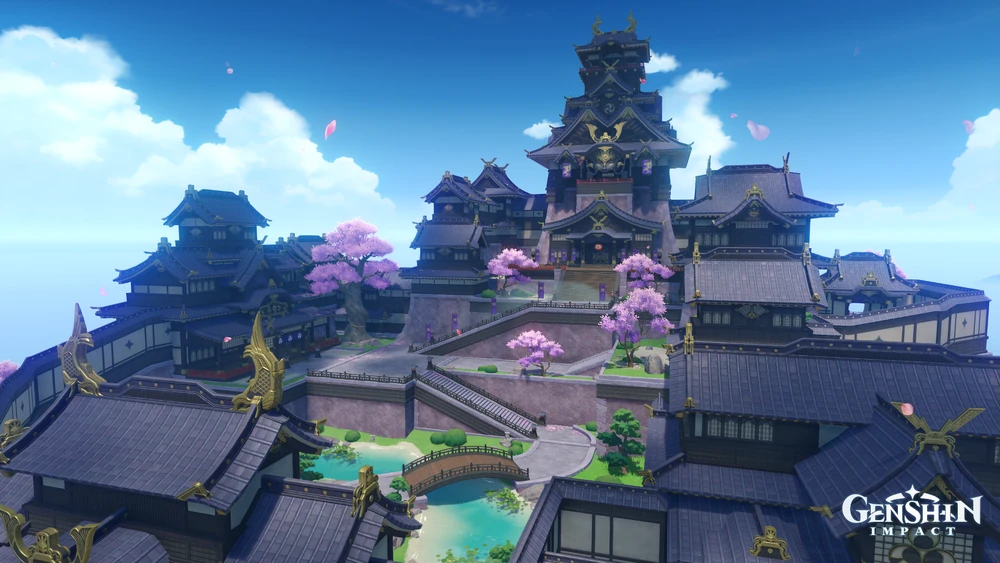
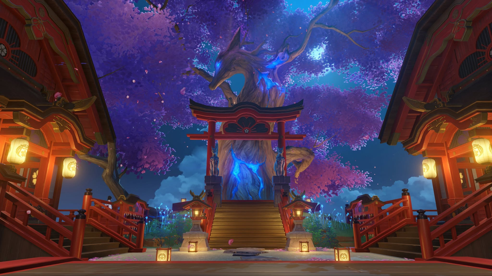

Hanamizaka Package
Come and stay in Hanamizaka, it is a suburb located north of the river cutting through the northern part of the city.
Order Now

The Land of the Gods
An Isolated Archipelago Far East of Teyvat
Overcome endless thunderstorms and set foot on the islands of red maple and cherry blossoms. On winding shores and towering cliffs,
and in forests and mountains full of secrets, witness the Eternity pursued by Her Excellency,
the Almighty Narukami Ogosho.
Inazuma is one of the seven nations of Teyvat. It is marked by its emphasis on "divinity."
Experience the eternal beauty of Inazuma...



